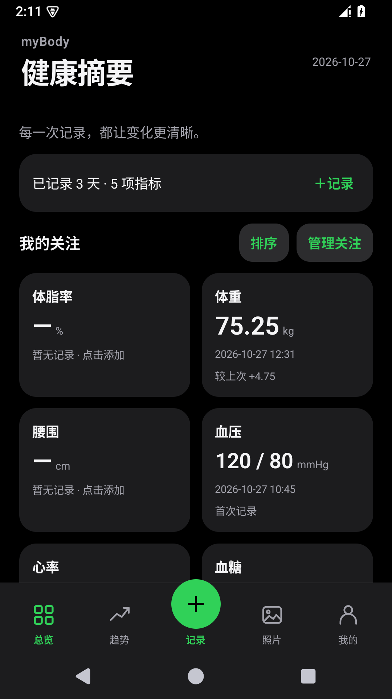
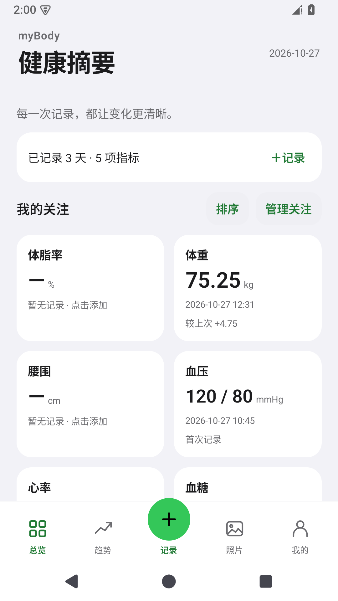

不只记体重，
记下完整的日常。
身体围度、健康监测、运动与生活状态，按类别整理；也能添加自己的数值或文本指标。
多项录入 · 自定义指标 · 记录备注为自己的身体，留一份记录
体重的起伏、围度的改变、日常的状态。
用 myBody 把它们好好记下，
在自己的节奏里，认识每一个阶段的自己。


真实 Android 应用截图 · 含测试数据
01 / MADE FOR YOUR EVERYDAY
给零散的身体记录，一个安静的归处。
从记下一笔，到回看一段时间。
身体围度、健康监测、运动与生活状态，按类别整理；也能添加自己的数值或文本指标。
多项录入 · 自定义指标 · 记录备注按 7、30、90 天或全部历史回看趋势，点击曲线看数值与日期，让变化有迹可循。
历史曲线 · 点选读数 · 单位区分按正面、侧面与背面保存阶段照片，选择同角度的两张并排比较，留下每个阶段的样子。
阶段照片 · 分类保存 · 双图对比02 / A CLOSER LOOK
打开就能找到关心的指标。
把操作留得简单，把注意力留给自己。
截图来自 myBody 0.6.0 Android 测试环境，
所展示数值为测试数据，不代表使用效果。
03 / QUIETLY, ON YOUR SIDE
无需登录，也不用等网络。
让一件日常小事，回归简单。
核心记录功能离线可用，无需创建账号。晨起的一笔、训练后的一笔，随时记下。
Android 记录保存在手机本地，iOS 网页版保存在当前浏览器或主屏幕应用本地。完整 ZIP 备份包含照片，CSV 便于用表格回顾指标。
选择关注的指标、调整排列、切换外观。不替你定义标准，只帮你整理变化。
卸载 Android 应用或清除 iOS 网站数据可能删除本地记录，请定期备份。备份文件未加密，请保存到可信任的位置。
本版更新：全新启动标志、轻量底部导航、个人档案编辑，以及集中管理的外观与备份设置。
8bebb25845cb830f471511f9400d5f2158f83b574723f5cee69163d44aad56ad安装前请备份原有数据。下载完成后，在 Android 上打开 APK，按系统提示确认安装。iPhone / iPad 用户可使用下方 iOS 网页版入口。
MYBODY FOR IPHONE & IPAD PWA 网页应用
适用于 iOS 17+ Safari。无需通过 App Store 安装，
添加到主屏幕后，从桌面就能打开 myBody。
用 iPhone 或 iPad 的 Safari 访问 iOS 网页版。
打开 Safari 分享菜单，找到“添加到主屏幕”。
按提示添加后，从主屏幕图标启动。建议添加后再开始正式记录。
首次打开需要联网。在“我的 → 设置 → 应用更新”中显示“离线资源已就绪”后，再离线使用。
数据保存在当前浏览器或主屏幕应用本地，不会与 Android 自动同步；Safari 标签页与主屏幕应用的数据也不能假定共用。请定期导出 ZIP 到“文件”等外部位置，清除网站数据可能删除记录。
04 / GOOD TO KNOW
关于使用、数据和项目的几个小问题。
不需要注册账号。Android 版的核心记录功能可离线使用。iOS 网页版首次打开需要联网，待“应用更新”中显示“离线资源已就绪”后再离线使用。下载安装包或访问官网需要网络。
包括身体档案、健康监测、健身与运动、生活状态、体检报告及自定义指标。可以记录体重、围度、血压等，也可以添加数值或文本类型的个人指标。BMI 根据体重与身高计算。
请在“我的 → 设置 → 数据与备份”中导出完整 ZIP 备份，妥善保存后再迁移。完整备份包含照片，当前上限为 64 MB；CSV 仅包含指标记录。恢复备份会整体替换当前数据，应用会在恢复前要求确认。应用不提供自动云同步。
可以。iPhone / iPad 用户可用 Safari 打开 myBody iOS 网页版 ↗，并通过“分享 → 添加到主屏幕”使用。这是 PWA 网页应用，不是 App Store 原生安装包。本官网提供介绍和入口，记录保存在独立的应用站点，不会与 Android 自动同步。
不会。myBody 用于个人记录和变化回顾，参考范围由你填写，趋势与差值不构成诊断或医疗建议。
myBody 基于 SolarisXD 的开源项目 PulseSense，围绕离线身体变化记录重新整理功能与界面，使用 React Native、Expo SDK 54、SQLite 和 Zustand。项目保留 MIT 许可与上游版权说明。
了解原项目 PulseSense ↗BUILT WITH OPEN SOURCE
从开放的代码出发，
为真实的日常打磨。
感谢 PulseSense 与开源社区的贡献。
myBody 是独立的个人二次开发项目。